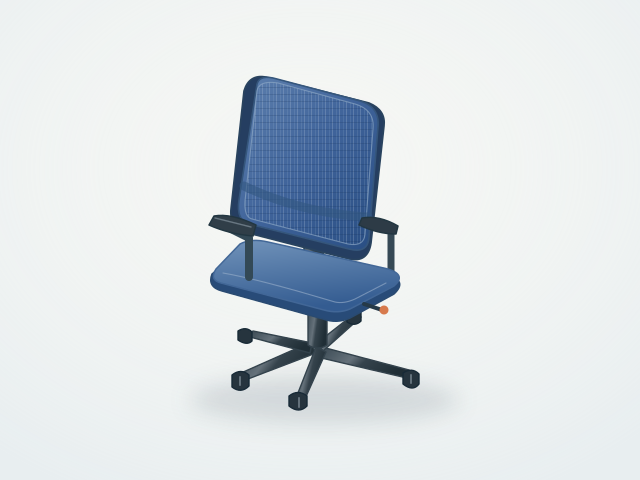
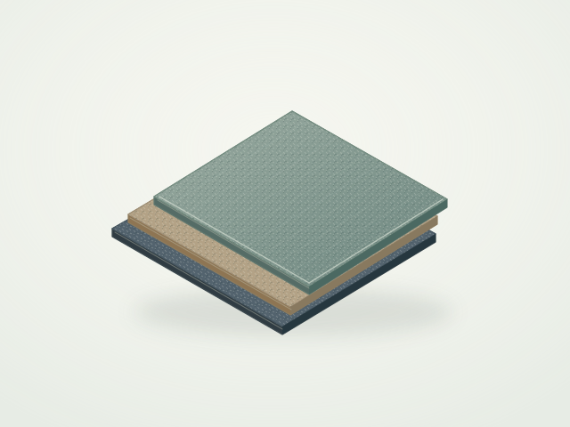
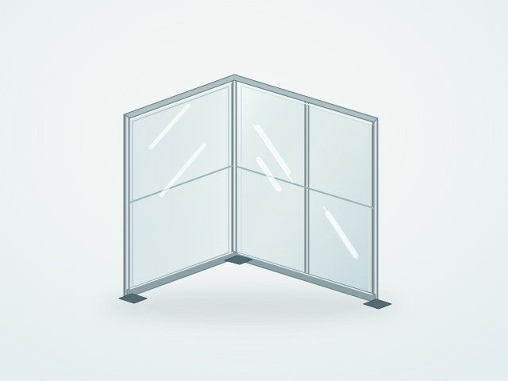
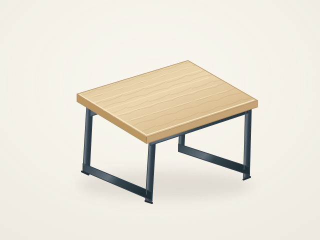

流通の問題である
何が、どこに、どんな状態で、いつ出て、誰に合うのか。情報が分断されているから、取引にならない。善意では解決しない構造の問題。
Circular Building Resources Lab
善意では広がらない。仕組みで動かす。
建物の中にある、まだ使える資源。見つけて、情報にして、次の使い手へ。相談支援とプラットフォームをつなぎ、建築リユースを動かします。
プラットフォーム公開プロトタイプ / 2026.11


タイルカーペット100㎡ ↗
↗The next life of materials
オフィスの椅子、床材、ガラス、照明。
「出品予定」の段階から情報を届け、必要な人とつながる。
建材・什器・設備の売買を、相談から始めるマーケットです。
PUBLIC PROTOTYPE — 掲載内容・イラストは架空のサンプルです。実在庫や成立した取引を示すものではありません。
什器 / オフィスチェア東京都港区
建材 / 床材大阪府大阪市

建材 / 間仕切り東京都中央区
写真・詳しい情報・場所や搬出条件・数量や利用方法。
気になる資源から、次の会話が始まります。
Scan to reuse
空間のデータから、品目・数量・寸法・写真へ。調査者と所有者の確認を経て、次の使い手を探す情報につなげます。K2を主な撮影機材、iPhoneを補助とする流れを開発しています。
公開画面ではPLYのファイル情報確認とサンプル操作を試せます。
実データのAI抽出・機材検証・本番の出品連携は、別途開発中です。

ミーティングテーブル12台Why
建築リユースが止まっているのは、価値が理解されていないからではない。価値を次に渡す回路がないから、止まっている。
何が、どこに、どんな状態で、いつ出て、誰に合うのか。情報が分断されているから、取引にならない。善意では解決しない構造の問題。
情報の接続、時間の接続、責任の接続。この三つが切れているから、価値があっても次に渡らない。
現場が動かないのは無関心ではなく合理性。工程を乱さず、責任が明確で、追加判断が少ない。その条件で初めて選択肢に入る。
Service
善意に頼らず、現場の合理性の中で成立する伴走をします。
新築・改修・解体・移転・竣工直前、どのフェーズでも対応します。建材・什器・設備について「どうすればいい？」の段階からお気軽にご相談ください。
建物に残る建材・什器・設備を現地調査し、再利用・売却・社内転用・寄付の可能性を整理します。
建築プロジェクト、設計者、施工者、企業、地域など、資源を必要とする候補先との接続可能性を探ります。
リユース材を使いたい建築プロジェクトに向けて、必要な資材・什器・設備の探索と品質確認を支援します。
再利用による廃棄削減効果の試算、社内説明資料の作成支援など、企業・団体の意思決定をサポートします。
企業・自治体・大学・団体と連携し、建築資源循環の小さな実証から社会実装まで、プロとして伴走します。
Consulting Themes
解体前・改修前に入り、情報と接続を先に整えます。
解体・改修・移転・閉鎖の予定がある施設や、余剰となった建材・什器・設備をお持ちの企業・団体と、小さな実証から始めたいと考えています。ロゴ掲載や大きな契約を前提にするのではなく、まずは現場・写真・数量・状態・搬出条件を整理し、次に活かせる可能性を一緒に探ります。
Mission
Vision
建築資源の情報流通OSをつくる。
Join Us
建築資源循環を一緒につくる仲間へ。
この活動は、ひとりの会社ではなく、建築・不動産・施工・解体・物流・法務・広報・デザイン・研究・地域活動に関わる人たちと育てるプロジェクトです。最初は副業・プロボノ・月数時間のお手伝いでも構いません。小さな実証を積み重ねながら、将来的には本格的な事業体へ育てていきます。
参加について相談するFAQ
建物に関するリユースのことなら何でもご相談いただけます。解体・改修・移転・新築・竣工直前、どのフェーズでも対応します。「こんなこと聞いていいのかな？」という段階で大丈夫です。
もちろんです。写真、図面、予定時期、施設の概要など、分かる範囲の情報からお話を始められます。まずはお気軽にお問い合わせください。
現在は、建材・什器・設備の流通の仕組みを体験できる公開プロトタイプです。掲載品は架空のサンプルで、購入・決済・取り置きはできません。実際の建物や資源に関するご相談は、お問い合わせから承っています。
この公開版では、ブラウザー内でPLYのファイル情報を確認し、サンプルや手入力の品目から出品プレビューを作成できます。実データのAI抽出はPC版ScanDeskで開発中です。入力内容が自動で外部に掲載されることはありません。
初期段階では、企業・団体名やロゴの掲載を前提にしません。必要に応じて、守秘や匿名での実証にも対応します。
いいえ。本活動は発起人個人として準備している独立した社会実装プロジェクトです。所属企業の公式活動ではなく、所属企業の秘密情報・資産・ロゴ・データは使用していません。
Contact
建物のリユースに関することなら、何でもお気軽にご相談ください。
送信ボタンを押すとメールアプリが起動します。内容を確認して、メールアプリから送信してください。